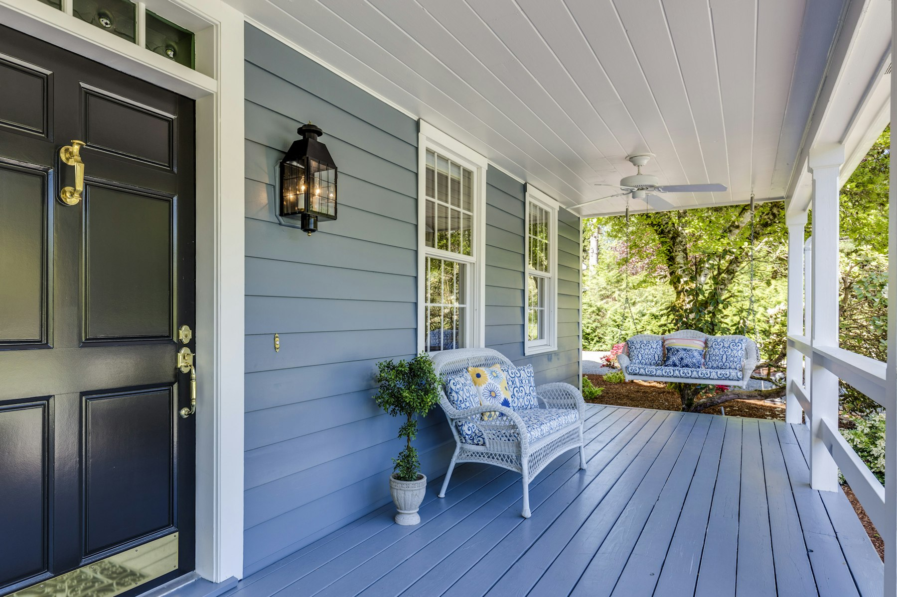

Homes for sale near you today
Search every home for sale in the ten cities the team serves, from the Bay Area through Solano County and into Greater Sacramento, and pick the one that fits.
Search homes
A covered front porch
Sample listing photoAreas we serve
Search homes 1Text that scrolls under the bar
Revealed with or without motion.